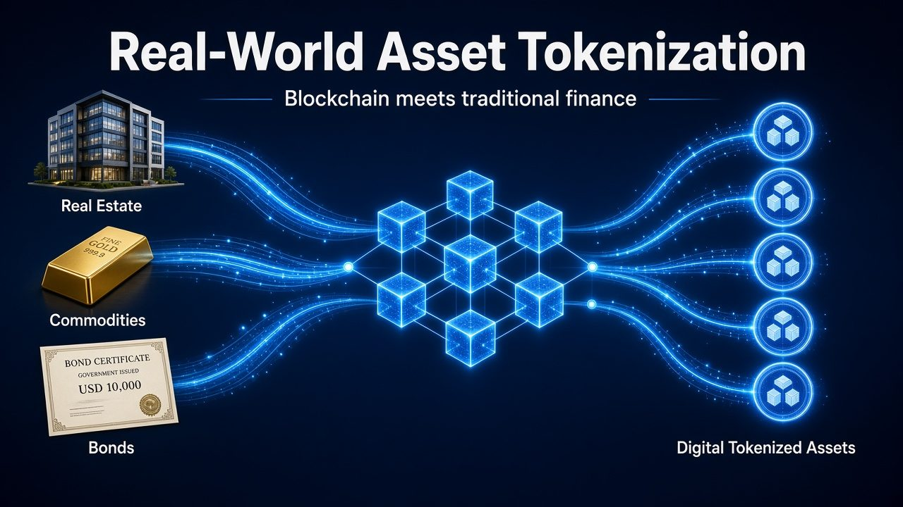

Tokenization
What is real-world asset (RWA) tokenization, in plain words?

Tokenization means taking ownership of something real, like a bond, a property, gold or an invoice, and recording it as a digital token on a blockchain.
Why it matters
- Smaller slices. An asset can be split into small units, so more people can own a piece of it.
- Faster settlement. Transfers can settle in minutes instead of days.
- 24/7 markets. Blockchains don't close on weekends or public holidays.
- Transparency. Ownership and transfers are recorded on a shared ledger.
The challenges are real too
Regulation still differs from country to country, the token is only as trustworthy as whoever holds the real asset, and markets for some tokens are still thin.
Where this is heading
This is one of the areas where traditional finance and blockchain are really starting to meet, and networks like XRPL, Ethereum and others are all building for it.
This article is for general information and education only. It is not financial, investment or legal advice.